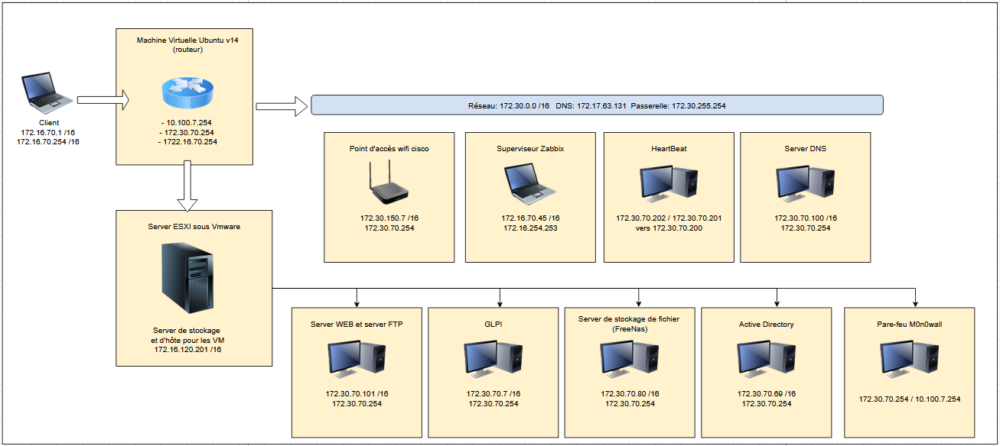

Bienvenue sur mon Portfolio
Présentation
Bonjour, je suis Paul, étudiant en BTS SIO et passionné par l’informatique, plus particulièrement par la cybersécurité et les réseaux.
Actuellement en apprentissage, j’ai l’opportunité d’acquérir une solide expérience professionnelle en parallèle de ma formation.
Chaque jour, je développe mes compétences en administration système, en gestion des infrastructures réseaux et en sécurité informatique, tout en approfondissant mes connaissances sur les menaces cyber et les bonnes pratiques de protection des systèmes d’information.
Ma curiosité et ma rigueur me poussent à toujours chercher de nouvelles solutions et à me tenir informé des dernières avancées technologiques.
J’aime relever des défis techniques et résoudre des problèmes, que ce soit en sécurisant un réseau, en automatisant des tâches ou en améliorant des processus existants.
Vous pouvez télécharger mon CV en cliquant sur le bouton ci-dessous afin de découvrir mon parcours, mes compétences et les projets sur lesquels j’ai travaillé.
Je suis toujours à l’écoute d’opportunités et d’échanges autour de l’informatique et de la cybersécurité, alors n’hésitez pas à me contacter !
√Ä bient√¥t ! üöÄ
Mes stages
Pour mon stage de première année, j’ai intégré le service informatique de la CCSS des Hautes-Alpes du 27 mai au 5 juillet 2024.
Durant ces cinq semaines, j’ai participé à diverses missions telles que l’installation d’une PLC pour un logiciel, la rédaction de modes d’emploi utilisateur, le cryptage de clés USB, l’installation de bornes WiFi et la gestion du patrimoine informatique.
Cette expérience m’a permis de développer mes compétences techniques tout en découvrant le fonctionnement d’un service informatique en entreprise.
Pour mon deuxième stage, j’ai eu l’opportunité de rejoindre le service informatique de l'Inspection Académique à Gap, du 7 janvier au 6 février 2025.
Pendant ces cinq semaines, j’ai réalisé diverses missions telles que la création de fichiers Batch, la rédaction de notices utilisateur, la configuration de routeurs WiFi, la gestion du patrimoine informatique et j'ai pu participaper à un projet de réalité virtuelle dans le cadre du projet France 2030.
Ce stage m’a permis de renforcer mes compétences techniques tout en découvrant de nouveaux domaines.
Ateliers profesionnels
Durant mes deux années de BTS Informatique, j'ai réalisé des projets avancés lors des Ateliers de Professionnalisation qui ont lieu chaque semaines.
L'Atelier GSB
Ce premiers ateliers consiste, à partir d'une entreprise fictive, de créer toutes les composantes de son SI (système informatique) au fil des semaines.
Voici la documentation détaillée de la mise en place de chaque étapes réalisées sur le cas GSB :
- Création du site vitrine
- Hébergement du site vitrine
- Transfert du site
- Protection du serveur Web
- La base de données
Les travaux sont disponible ci-dessous au format PDF :

Le schéma réseau de GSB

Travaux pratiques
Au cours de ces deux années de BTS, j'ai réalisé de nombreux travaux pratiques afin de renforcer mes compétences en informatique et en cybersécurité.
Vous pouvez accéder à mes réalisations via le lien ci-dessous vers mon Google Drive.
Veille technologique
Pour cette veille j'ai choisi comme sujet l'informatique quantique